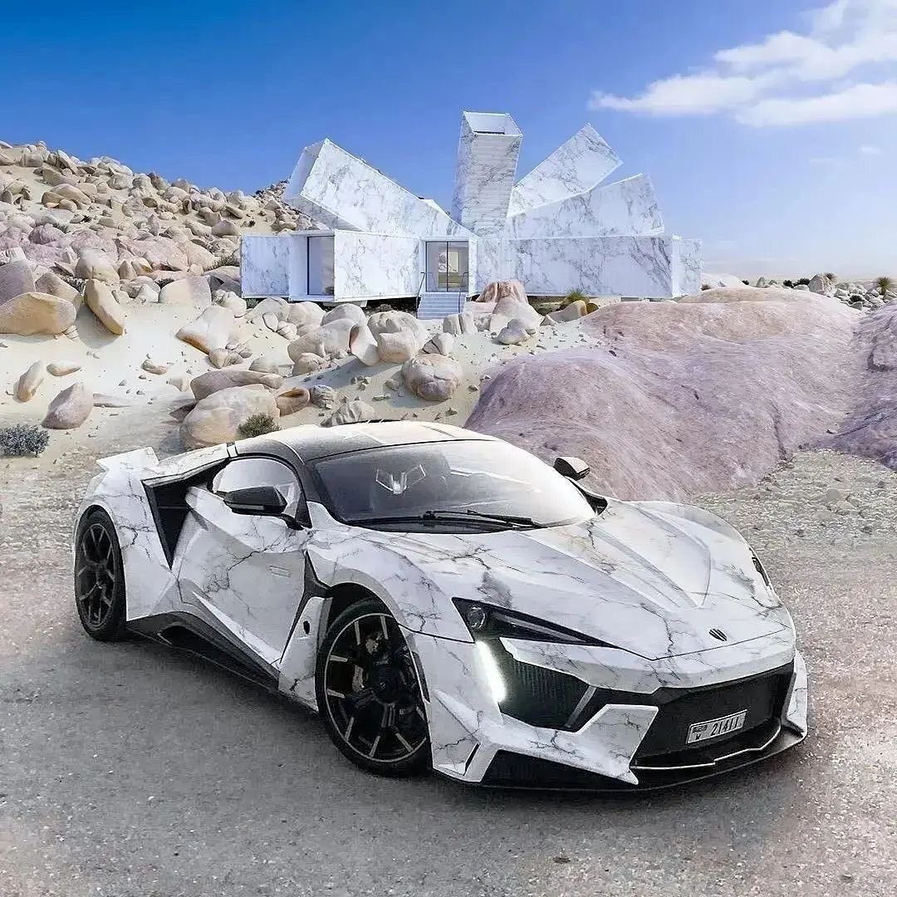

CHEVROLET CAMARO (ШЕВРОЛЕ КАМАРО) Шестое поколение Chevrolet Camaro предстало перед широкой публикой в 2016 году и выпускалось до 2018, пока производитель не анонсировал обновленную версию. Она представляет из себя первый рестайлинг и была продемонстрирована на родном рынке еще в апреле. Отечественные дилерские центры открыли предварительный заказ в декабре, а первые машины встретят своих владельцев только в январе 2019. Модернизация затронула, по большей части, косметическую составляющую автомобиля. Он стал выглядеть гораздо агрессивнее своего предшественника. Вся наружная светотехника получила современную светодиодную начинку. Фары стали уже, получили двойные фокусирующие элементы и другие секции дневных ходовых огней. Решетка радиатора визуально слилась с нижним воздухозаборником, получившим дополнительные боковые секции. Такое решение позволило оптимизировать воздушные потоки и улучшить охлаждение. На корме расположились новые, более округлые стоп-сигналы. РАЗМЕРЫ Шевроле Камаро- это спортивное четырехместное купе. После рестайлинга, оно насчитывает 4784 мм в длину, 1348 мм в высоту, 1897 мм в ширину и 2811 мм между колесными парами. Дорожный просвет среднестатистический и составляет 150 миллиметров. В основе автомобиля лежит модернизированная платформа Alpha, знакомая по Cadillac CTS. Для адаптации под купе ее переработали практически на 70%. Кузов получил высокое содержание крылатого металла, что позволило скинуть до 90кг и увеличить на 28% жесткость на кручение, по сравнению с прошлым поколением. Что касается самой подвески, то спереди расположились стойки McPherson с алюминиевыми рычагами и двойным поворотным кулаком. Сзади находится многорычажная конструкция. По умолчанию, автомобиль оснащается тормозной системой фирмы Brembo. На передней оси располагаются 320-миллиметровые вентилируемые диски и суппорты с четырьмя поршнями. Сзади поршень всего один, а диаметр- 315 мм.
">Bugatti Veyron — гиперкар компании Bugatti, производившийся с 2005 по 2015 год. Назван в честь французского легендарного гонщика Пьера Вейрона, победителя 1939 года в гонках 24 часа Ле-Мана[1]. В 2010 году журналы Top Gear и Robb Report присудили награду «Автомобиль десятилетия» Bugatti Veyron и модификации Grand Sport соответственно[2]. Модификация Super Sport в 2010 году побила мировой рекорд скорости и стала самым быстрым серийным автомобилем в мире[3]. Производство Veyron на данный момент завершено, всего было продано 450 автомобилей: 300 купе и 150 родстеров[1]. Его преемником является Bugatti Chiron, официально представленный на женевском автосалоне в 2016 году. Автомобиль в кузове купе массой 1888 кг. Длина — 4462 мм, ширина — 1998 мм, высота — 1204 мм, колёсная база — 2710 мм. В автомобиле установлен восьмилитровый двигатель (7993 см³) W16 с четырьмя турбинами мощностью 1001 л. с. при 6000 об/мин и максимальным крутящим моментом 1250 Н·м при 2200—5500 об/мин. Фактически же мощность двигателя составляет от 1020 до 1040 л. с.[13] Для охлаждения двигателя применяются десять радиаторов. Коробка передач переходит на каждую последующую передачу за 0,15 секунды за счёт использования двойного сцепления[1]. При такой схеме чётные передачи включаются одной секцией коробки передач и имеют своё сцепление, а нечётные — другой секцией, также со своим сцеплением. При переходе на следующую или предыдущую передачи требуется переключить только сцепления, так как передача уже готова и не надо затрачивать время на её переключение.